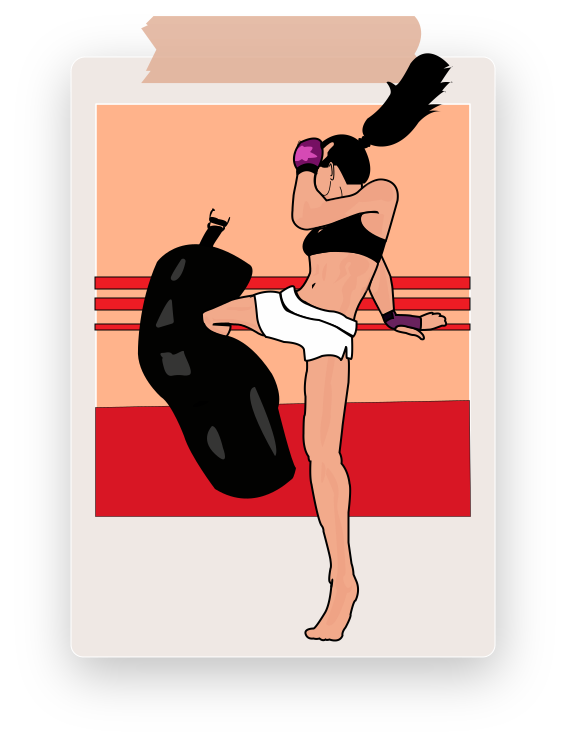
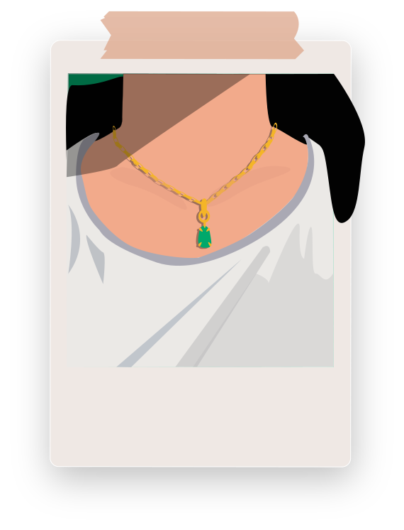
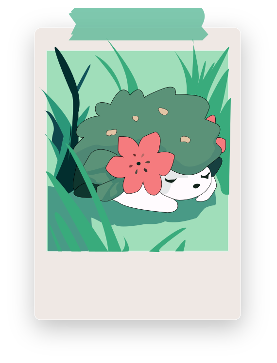
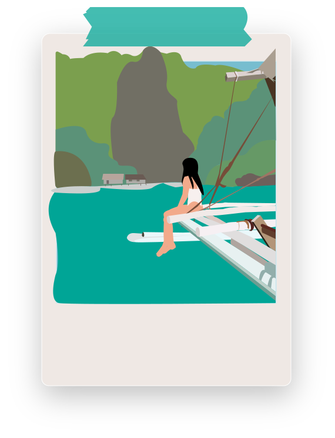

Portrait Chinois


Si j’étais un véhicule, je serais un
  L’avion est un véhicule que je trouve magique.
L’avion m’a permis de voyager énormément dans le monde.
Voyager en avion nous donne l’occasion de pouvoir voir nos proches qui habitent loin sur d’autres continents
,
de découvrir de nouveaux horizons, de nouveaux paysages et de nouvelles cultures.
avion
Si j'étais un instrument, je serais une
J’ai commencé à jouer de la guitare à l’âge de 10 ans.
Depuis, c’est mon instrument préféré, on peut le transporter partout pour jouer où on veut et quand on
veut. Avec une guitare on peut jouer différentes ambiances que ce soit romantique, pop ou country.
guitare
Si j'étais un sport, je serais la

J’ai toujours aimé le sport mais surtout le sport de combat. En effet, j’ai fais de la boxe thaïlandaise pour l’adrénaline. Non seulement j’aime en faire mais aussi regarder des combats. Manny Pacquiao étant l’un des boxeurs que je suis depuis mon plus jeune âge, je regardais tous ses combats en streaming.
boxe
Si j'étais un plat, je serais le

Le bibimbap étant un plat coréen souvent servi dans un bol en pierre chaud est mon plat préféré. J’adore le mélange de riz, de viande de bœuf, de légumes sautés, ensuite assaisonnés, et d’un œuf au plat.
bibimbap
Si j'étais une pierre, je serais le

Le jade a toujours été l’une de mes pierres précieuses préférées car depuis toute petite mes proches m’offrent des bijoux avec du jade. Le jade est une pierre qui symbolise l’amour et la vertu qui favorise l’honnêteté et la justice. Aujourd’hui, je porte tous les jours, autour du cou un pendentif en jade.
Jade
Si j'étais un Pokémon, je serais

Shaymin est un Pokemon légendaire fabuleux de la 4ème génération. J’aime ce Pokemon car il reflète une partie de ma personnalité il est intrépide et joueur mais aussi ressent beaucoup de gratitude.
Shaymin
Si j'étais un pays, je serais les

Je suis d’origine Philippines. J’y vais tous les 3 ans pendant les vacances pour pouvoir revoir ma famille. Même si je n’y suis allé que quelques fois ça a toujours été un pays que j’apprécie beaucoup de par sa beauté et le charme du paysage et de ses habitants.